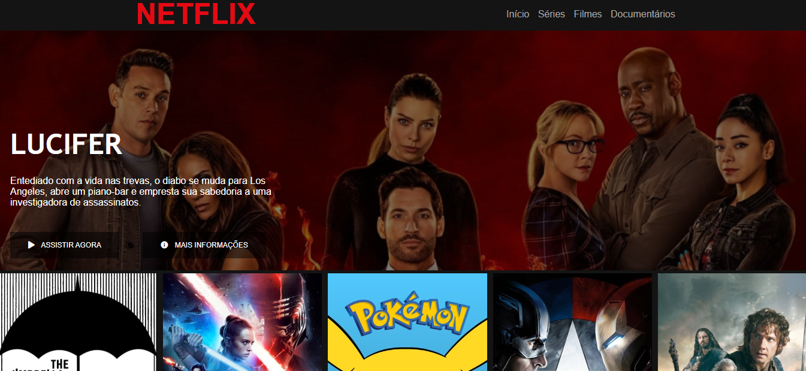
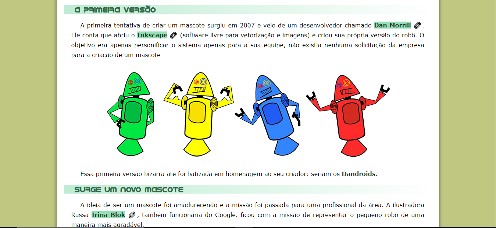
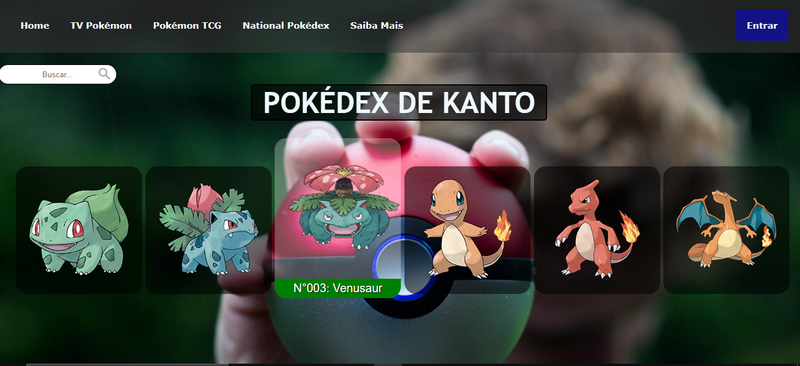

Sobre mim


Projeto criado como parte de um desafio para um curso e como enriquecimento de portfólio. Me orgulho por esse ser o meu melhor projeto até aqui, pretendo melhorá-lo e adicionar mais funcionalidades e posteriormente criar minha própria versão customizada.
Esse projeto apesar de ser simples foi meu primeiro projeto desenvolvido em um curso de HTML e CSS, consegui obter bastante aprendizado através dele, foi um desafio bastante desafiador para meus conhecimentos na época em que desenvolvi o mesmo.
Esse projeto tem um carinho especial, pois sou apaixonado por pokémon e foi um projeto que criei do zero e fui aplicando todos os conhecimentos que fui adquirindo. Fiquei bastante satisfeito com o resultado, sei que há ainda muito para melhorar mas mostra o quanto eu evolui.
